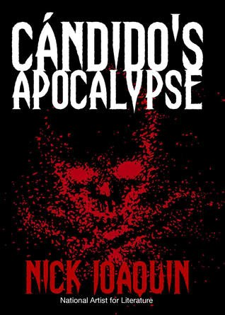

Literary Works
Two Popular Novels
Author: Lualhati Bautista

Author: Jose Rizal

Let's Explore the Rich Literary Heritage of the Philippines.
Mission and Vision: Our mission is to preserve and promote Philippine literature by providing a platform for Filipino writers to showcase their works.
History of Philippine Literature: A brief history of Philippine literature and its development through the years.
Background: A celebrated Filipino novelist, screenwriter, and activist known for her strong feminist stance and social commentaries.
Notable Works: Dekada '70, Bata, Bata... Pa'no Ka Ginawa?, and Gapô.
Contributions: Her novels highlight social issues such as political repression, gender inequality, and the struggles of ordinary Filipinos.
Legacy: Bautista's works are influential in Philippine literature, inspiring films and discussions on social justice.
Background: A Filipino nationalist, polymath, and the most famous figure in Philippine history. He was a doctor, writer, and social reform advocate.
Notable Works: Noli Me Tangere and El Filibusterismo.
Contributions: Rizal's writings exposed the oppression under Spanish colonial rule, fueling the nationalist movement.
Legacy: Regarded as the national hero of the Philippines, Rizal's works are still widely studied and celebrated.
Background: A mysterious contemporary Filipino author known for blending humor with social commentary. His identity remains anonymous.
Notable Works: ABNKKBSNPLAko?!, Stainless Longganisa, MacArthur, and Alamat ng Gubat.
Contributions: His works often reflect Filipino life, values, and struggles, written in a conversational and humorous tone.
Legacy: His novels have reached widespread popularity, especially among younger audiences.
Background:A prominent Filipino comic book writer and graphic novelist. .
Notable Works:Darna, Captain Barbell, Lastikman, and Jack and Jill. .
Contributions: Ravelo's superhero characters became iconic in Philippine pop culture, blending Western superhero elements with Filipino cultural themes. Darna, for example, is a powerful female superhero symbolizing justice and strength .
Legacy: Many of his creations have been adapted into TV shows, movies, and theater productions, influencing generations of Filipino creatives.
Background:A well-known Filipino writer famous for her romance novels and TV dramas. .
Notable Works:Sinasamba Kita, Bakit Manipis ang Ulap?, and Kung Mahawi Man ang Ulap. .
Contributions: Her stories focus on love, betrayal, and redemption, resonating with Filipino audiences for their emotional depth and relatable narratives. Many of her novels have been adapted into popular films and television series.
Legacy:Olvidado’s works have played a major role in shaping Philippine romantic drama.
Background: A National Artist for Literature, known for his rich and complex storytelling. .
Notable Works:The Woman Who Had Two Navels, A Portrait of the Artist as Filipino, and May Day Eve. .
Contributions: Joaquin explored themes of identity, colonial influence, and family dynamics. He often used magical realism and historical references to reflect on Philippine culture.
Legacy:Widely regarded as one of the greatest Filipino writers in English, Joaquin’s works remain a staple in Philippine literature.
Background: A Filipino comic book artist, writer, and film director. .
Notable Works:Panday, Totoy Bato, and Gagambino. .
Contributions: Caparas is known for creating stories that blend action, drama, and social issues. His films often depict heroic characters overcoming adversity.
Legacy:He became a prominent figure in both comics and cinema, bringing powerful stories to mainstream Filipino entertainment
Author: Lualhati Bautista
Author: Jose Rizal
Author: Bob Ong
Author: Mars Ravelo
Author: Gilda Olvidado
Author: Nick Joaquin
Author: Carlo J. Caparas